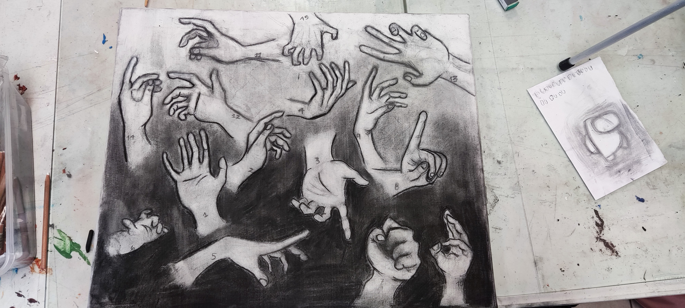
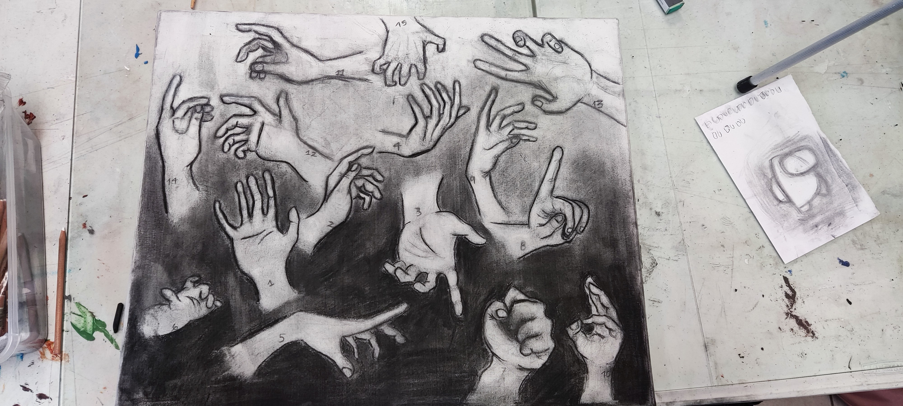
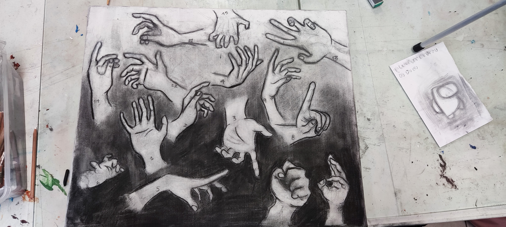

I sit here, Saturday, 17th of June, 2023, at 11:48 pm, now writing my last high school assignment ever. Yes, this was due yesterday. Yes, I won’t get a 10. But after all that’s happened these last few days, I’m thinking, maybe it was always about the experience. Entering this particular high school always seemed to me like it was going to be incredibly competitive, and like all that was gonna matter were gonna be grades. I wasn’t wrong at all. High school academics pretty much became my whole life once I got back in senior year. Was it worth it? Totally. But, god. I wish I could do it all again. I wish I could’ve said hi sooner. I wish I could've gotten closer to them all, before it was already time to say goodbye. It’s not completely over yet, though. We still have one more week before we get the official graduation. But, I just keep thinking, and thinking, about the possible pasts that I could’ve had right now. All the moments that did not happen. All the laughs, the sorrows. I wish I could've existed more; I suppose.
That aside, I’m definitely proud of what’s become of me these last few years. I’ve seen a big change, and I’m so glad it’s been so drastic. In the end, I guess I’ve come a little closer to understanding how to own my mistakes - I guess now I have to learn how to make the most of them right when they happen. It’s a skill that I’d be amazed to find someone who mastered it. I’m already amazed though, at the fact that, in a way, I managed to ‘fail up’. It’s testimony of my belief that suffering can lead to change. It’s on you how it changes you.
More than anything though, I’m thankful; I’m so thankful - for everything. For having the best teachers, the best classmates, and the best friends I could’ve ever asked for. Honestly, without their encouragement, I probably would’ve given up. I, really don’t want to ever forget them. I’ll do my best not to. I don’t think I’ve ever wanted to stay in contact with someone as much as I do now. Despite my not knowing exactly what I’ll do or where I’ll go, lately I’ve been starting to wonder about them. I’m completely sure they’ll do amazing things - and I really hope our paths eventually cross again. I’ll be really looking forward to it.
Alright Alek, let’s do this. Let’s end this with a high note.


 
